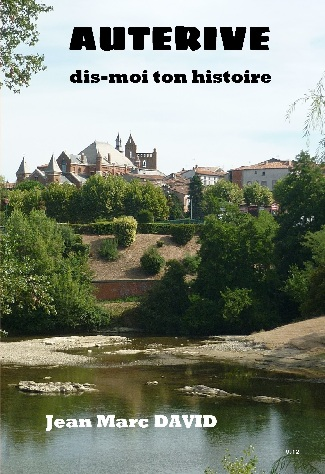
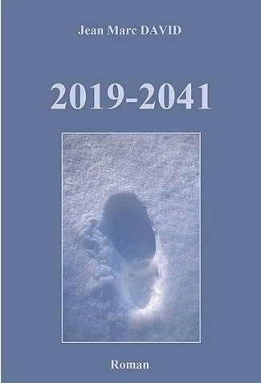
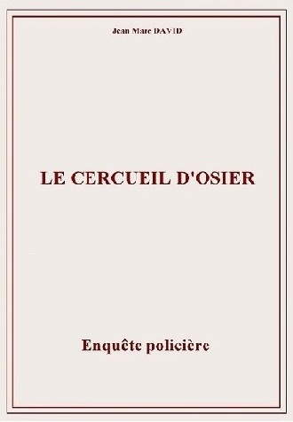
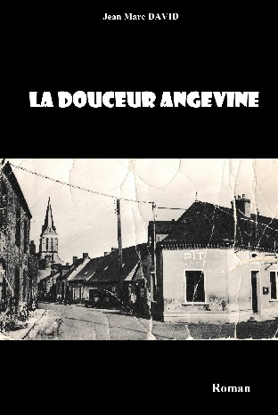
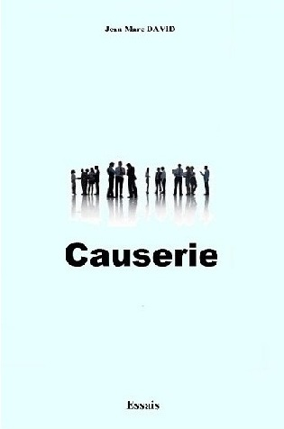

Auteur indépendant — romans et récits
Auteur indépendant, je publie des romans ainsi qu’un ouvrage consacré à la mémoire locale.
Mon travail mêle imagination, regard sur le monde contemporain et un intérêt pour l’histoire.
Parmi mes livres, Auterive, dis-moi ton histoire occupe une place particulière. Sa réalisation m’a conduit à effectuer de nombreuses recherches, dont une partie est aujourd’hui accessible à travers une base documentaire dédiée.
Ce site présente l’ensemble de mes ouvrages, ainsi que ce travail spécifique autour de l’histoire d’Auterive.

Un ouvrage consacré à l’histoire d’Auterive, fondé sur des recherches locales, des archives et des documents anciens.
Sa réalisation m’a conduit à constituer une base documentaire aujourd’hui accessible en ligne, permettant d’approfondir la connaissance de l’histoire de la ville.

Un roman d’anticipation où un homme projeté de 2019 à 2041 découvre un monde transformé.
Voir le livre
Une enquête policière inspirée d’une affaire réelle des années 1929-1930, reconstituée à partir d’archives de l’époque.
Voir le livre
Le parcours d’un jeune garçon venu de Paris, découvrant la vie dans un village angevin resté à l’écart du monde moderne.
Voir le livre
Une réflexion née du confinement, pour recréer, le temps d’une lecture, un moment d’échange et de partage.
Voir le livreUn roman d’anticipation où des messagers venus d’ailleurs observent l’humanité et s’interrogent sur ce qu’elle est devenue.
Voir le livrePour toute question, commande ou échange :
Livres disponibles sur :